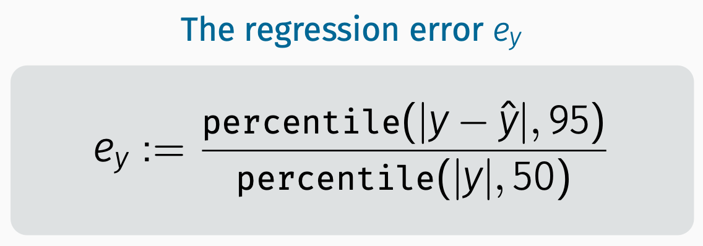
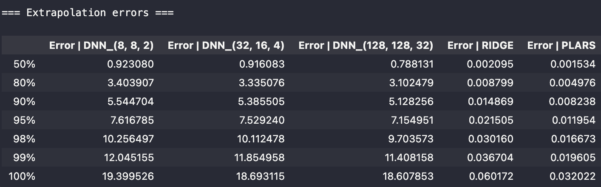
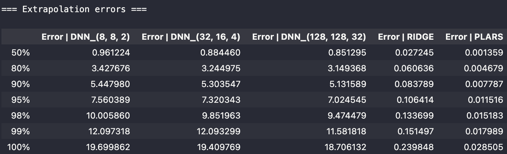
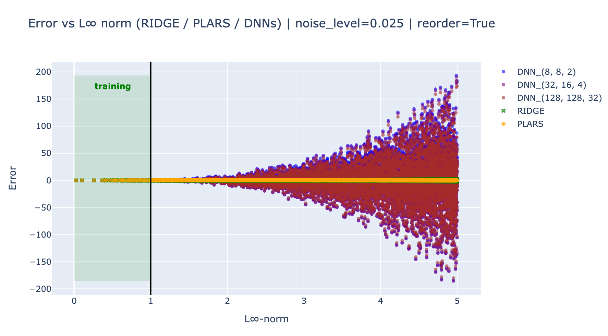
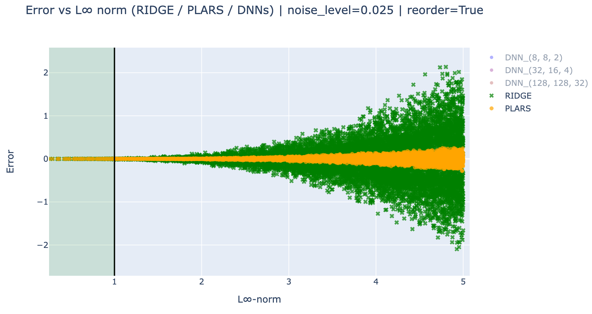
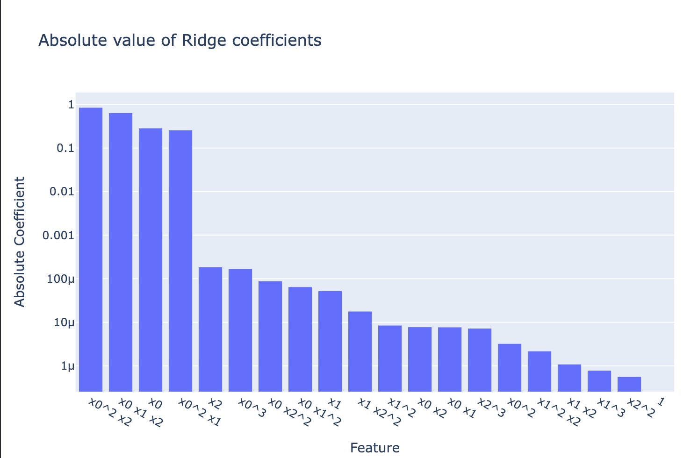
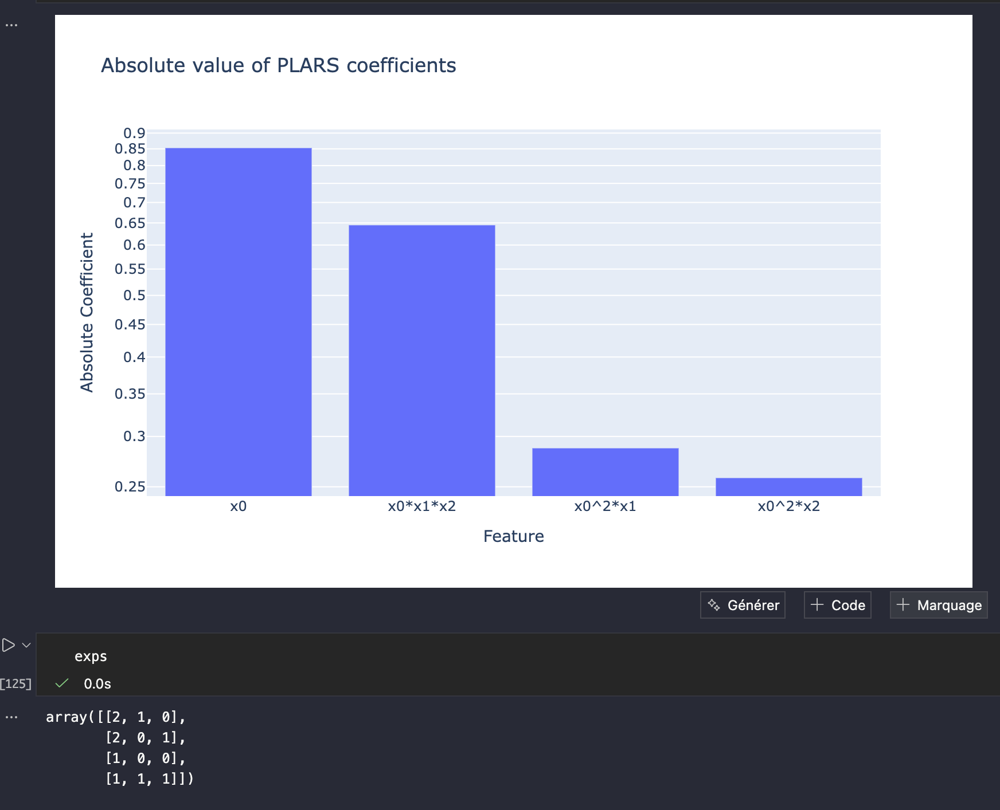

Parsimonuous models are robust to context variation
A simple illustrative example
In this section, we consider a very simple example of the comparison between the behavior of a parsimonious model and several non parsimonious models in order to highlight the robustness of the normality characterization via parsimonious relationships to unseen contexts.
1 The protocol
We shall define a dataset that involves \(n_x=3\) features through a label that is an exact polynomial of degree deg=3 involving only \(4\) monomials.
1.1 Training data
The training dataset is obtained by generating nSamples=10000 samples of features in the hypercube:
\[ \mathbb X_\text{train} := [-1,1]^3 \]
The label is computed using the polynomial defined by the following powers and coefficients matrix and vector respectively1:
\[ P := \begin{bmatrix} 2&1&0\cr 2&0&1\cr 1&0&0\cr 1&1&1 \end{bmatrix} \quad ;\quad c\in [-1,1]^4 \]
which leads to a relationships of the form:
\[ y = c_1x_1^2x_2 + c_2x_1^2x_3 + c_3x_1 + c_4x_1x_2x_3 \tag{1}\]
The label vector, denoted by \(y_\texttt{train}\), associated to the matrix \(X_\text{train}\in \mathbb R^{\texttt{nSamples}\times 3}\) is obtained by computing the value of the polynomial defined by \((P,c)\) at the 10000 samples (rows of X):
y_train = poly_func(X_train) + np.random.normal(0, noise_level, size=nSamples)where noise_level is taked either equal to 0 or to 0.025 in order to check the robustness to noise of the fitted model.
1.2 The compared models
Five models are fitted using the pair of features matrix and label defined by \((X_\texttt{train},y_\texttt{train})\). Namely:
Three Dnn models with different structures as shown in the following excerpt of the python code:
lesDnn = [(8,8,2), (32,16,4), (128,128,32)] model_dnn = {i:None for i in range(len(lesDnn))} cpu = {i:None for i in range(len(lesDnn))} iModel = 0 for iModel, ns in enumerate(lesDnn): n1, n2, n3 = ns model_dnn[iModel] = keras.Sequential() model_dnn[iModel].add(layers.Dense(n2, activation='relu')) model_dnn[iModel].add(layers.Dense(n3, activation='relu')) model_dnn[iModel].add(layers.Dense(n1, activation='relu', input_shape=(nx,))) model_dnn[iModel].add(layers.Dense(1)) model_dnn[iModel].compile(optimizer='adam', loss='mse') t0 = time() model_dnn[iModel].fit(Xtrain, ytrain, epochs=500, batch_size=32, validation_split=0.2, verbose=0)These models involve an increasing number of neurons in order to show that the qualitative conclusion does not significantly depend on the structure.
Notice that following the good practice, the depth of the fit process is supervised though the use of a validation set which is here taked to be 20% of the training set in order to avoid the over-fitting phenomenon.
One model based on a Non parsimonious linear regression applied to the polynomial features generated from \(X_\text{train}\) as it is shown in the following excerpt:
from sklearn.preprocessing import PolynomialFeatures from sklearn.linear_model import RidgeCV from sklearn.pipeline import make_pipeline model_ridge = make_pipeline(PolynomialFeatures(degree=deg), RidgeCV()) t0 = time() model_ridge.fit(Xtrain, ytrain) cpu_ridge = time() - t0A last model that is obtained using the
plarsmodule of theMizoPolpackage which seeks a parsimonious multivariate polynomial:from plars import PLARS, predict, normalized_error pl = PLARS(window=2000, deg=deg, nModels=20, nModes=20, eps=0.05) t0 = time() sol = pl.fit(Xtrain, ytrain) cpu_pl = time() - t0
1.3 The test dataset
The test dataset is defined so that unseen regions in the training data are used in order to check the robustness of the normality characterization via the invariant relationships. In other words, we want to answer the question:
Does the relationship holds on the unseen regions that were absent from the training data?
For this reason, a new set of nSamples=10000 samples are randomly generated inside the hyper-cube:
\[ \mathbb X_\text{test} := [-5,5]^3 \]
so that many samples lie outside the training set domain \(\mathbb X_\text{train}=[-1,1]^3\).
This might be viewed as an instantiation of a new context in which the features visit regions that were not visited in the training dataset while the relationship is kept unchanged. Good models should not see any reason to raise alarms.
2 Results & comparison
2.1 Extrapolation errors
The statistics on the extrapolation error (residual on the sample in the test dataset) are expressed in terms of normalized percentile, namely:



Obviously, the above table show how bad is the generalization power of the DNN-based models. The non sparse solver remains quite good in the absence of noise and starts to seriously be affected as soon measurement noise is added. On the contrary, the sparse model resists in all circumstances.
2.2 Residual vs regions
In order to better see how the errors spread in the training and the unseen domain, the following plots shows the errors as function of the \(L_\infty\) norm of the features vector.




These results clearly show that the DNN models does not resist to unseen contexts in the training data and extrapolate very badly on these regions.
On the other hand, for both noise level, the parsimonious model extrapolates better than the full polynomial-Ridge, in particular in the presence of noise. This is because even with this small noise, the full model is slightly detuned because of the availability to fit, even a tiny part of the noise, while the parsimonious model does not possess this abusive power.
2.3 Model’s cardinality
This section looks at the number of active coefficients in each of the models discussed above. Only one representative of the set of Dnn models is shown in order to underline that these models involved tens of thousands of non zero coefficients.
As for the Ridge-polynomial and the plars models, infinitely less coefficients are used and in particular, in the case of noise-free training, the exact four coefficients are found which fully explains why this plars-associated model keeps its quality far away from the training region which makes it context-independent.


Notice that the most important features are those shared with the plars solution and which correspond to the true four monomials being used in Equation 1. Nevertheless, the presence of the other coefficients leads to higher distorsion outside the training domain \(\mathbb X_\texttt{train}\).

In the next section, we dig a little bit deeper inside an equipment in order to understand what are the different reasons that induce ambiguity in the diagnosis of normality.
Footnotes
See the section on the definition of multivariate polynomials.↩︎